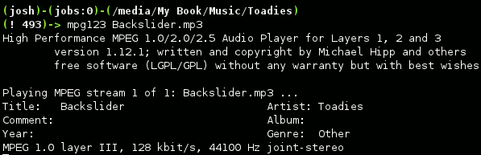

Как проигрывать MP3-файлы с командной строки Linux
OSmaster.org.ua > Linux > Ubuntu > Как проигрывать MP3-файлы с командной строки Linux
administrator 20.08.2011 10 Комментариев Просмотров: 13 492
Мало кто слыхал и еще меньше людей пользуются возможностью прослушивания MP3-файлов через командную строку. Это и не странно, ведь в любой операционной системе есть качественный и хорошо графически оформленный музыкальный плеер. Но и в этом способе прослушивания музыки есть свои преимущества.
Для того чтобы установить программу Mpg123 запустите терминал и введите в нем следующую команду:
sudo apt-get install mpg123
Это приложение доступно для всех видов операционных систем семейства Linux под одним названием mpg123, но также есть возможность скачать его и в исходном коде по следующей ссылке:
Управление.
Для того чтобы включить проигрывание конкретной песни необходимо перейти в каталог с MP3-файлами и ввести в командную строку после mpg123 имя песни:
mpg123 имя_файла.mp3
После чего программа приступит к проигрыванию трека от начала до конца, и выведет на экран следующий текст:

Плейлисты.
Вы также можете использовать шаблоны для отправки на проигрывание в mpg123 нескольких файлов одновременно. Самый простой способ создать плейлист — это, находясь в папке с MP3-файлами, ввести следующую команду:
mpg123 *.mp3
А для того чтобы песни проигрывались в случайном порядке, добавте в предыдущую команду флаг «-Z».
Или вы можете использовать стандартный башовский редирект чтобы направить на проигрывание в mpg123 список файлов.
mpg123 -Z -@ < файл_плейлиста
Где, флаг -@ указывает mpg123 то, что следующий ввод необходимо трактовать как плейлист (это укороченный флаг -list), а символ < — это стандартный редирект в командной строке, который берет текст из файла и передает его в плеер.
Дистанционное управление плеером.
Многим пользователям Linux известно об протоколе SSH, который предоставляет доступ к консоли удаленной системы, а так как mpg123 — это чисто консольное приложение, то и управлять им можно также через SSH. Введите следующие команды в терминале:
ssh имя_пользователя@адрес_удаленной_машины
mpg123 -Z -@ < файл_плейлиста
и услышите музыку на удаленном компьютере.
==============
19
Установите vlc , используя:
sudo apt-get install vlc vlc-plugin-pulse mozilla-plugin-vlc
Убедитесь, что у вас есть все открытые репозитории. Также запустите следующее перед установкой:
sudo apt-get update
VLC имеет метод операции командной строки, вызываемый cvlc . Следующей частью будет написать .sh который будет вызывать команду. Я не очень хорош в написании сценариев bash. Конечный результат будет примерно таким:
cvlc xyz.mp3 cvlc --play-and-exit done.mp3
поделиться улучшить этот ответ
отредактировано 5 ноября 15 в 21:52
163 4
ответил 28 Апр '11 в 4:48
291 1 4
cvlc слишком медленно загружается? и нужно запустить пользователем без полномочий root? - c2h2 9 мая '11 в 3:24
cvlc --play-and-exit done.mp3 если вы не хотите его ctrl-c. - Майкл Коул 5 ноября '15 в 20:23
cvlc --play-and-exit --no-loop done.mp3 . Мне нужна дополнительная опция --no-loop , чтобы звуковой файл не повторялся снова и снова. (vlc 2.2.2, xubuntu 16.04.4) - love.by.Iesus 18 апреля 18 года в 8:46
добавить комментарий